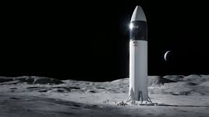
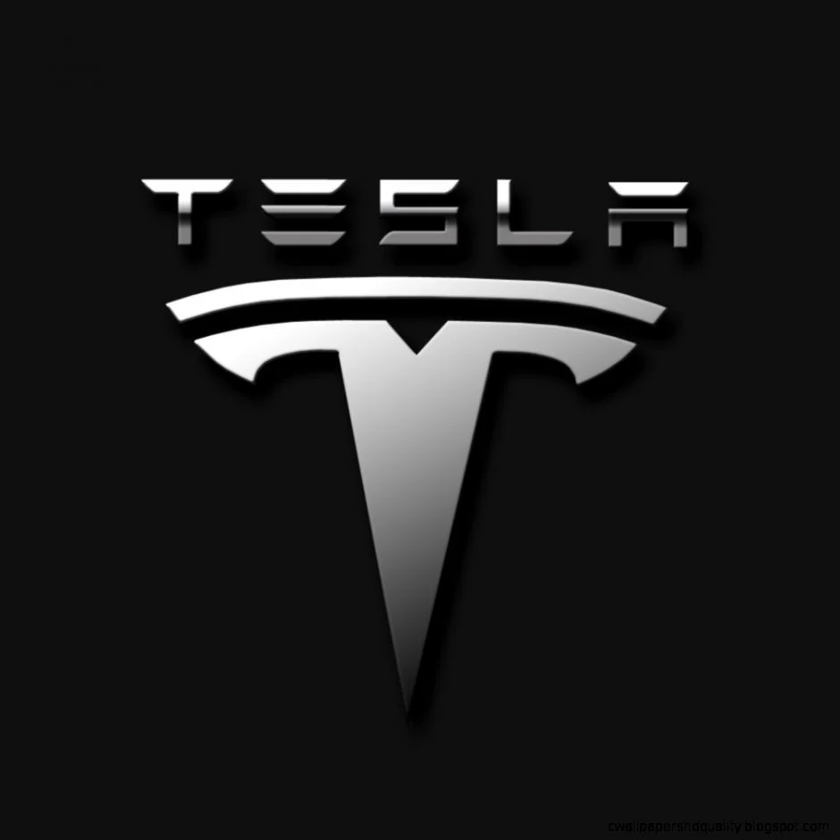

Elon Musk, (born June 28, 1971, Pretoria, South Africa), South African-born American entrepreneur who cofounded the electronic-payment firm PayPal and formed SpaceX, maker of launch vehicles and spacecraft. He was also one of the first significant investors in, as well as chief executive officer of, the electric car manufacturer Tesla.
Elon Musk was born in Pretoria, South-Africa on 28 June 1971. He’s the son of a Canadian model (Maye Musk) and a South-African electromechanical engineer (Errol Musk). His parents divorced in 1980, after which Musk lived with his father.
When he was 10 years old, he discovered the Commodore VIC-20. He taught himself to programme and sold a video game coded in BASIC two years later. BASIC is an imperative programming language that was originally intended to help people learn programming very quickly. The game was called Blastar, and he sold it to PC and Office Technology magazine for 500 dollars soon after.

As a child, Musk attended the independent Waterkloof House Preparatory School. He did his final exams at Pretoria Boys High School and moved to Canada in June of 1989. He then became a Canadian citizen through his Canadian mother.
In 1989 Elon Musk was admitted to Queen’s University in Kingston, Ontario. In 1992, after two years at Queen’s University, Musk left for the University of Pennsylvania, where he earned his Bachelor of Science degree in Physics from Penn’s College of Arts and Sciences and his Bachelor of Arts degree in Economics from the Wharton School of the University of Pennsylvania. Musk continued for another year to get his second bachelor.
During his studies at the University of Pennsylvania, Musk and fellow student Adeo Ressi bought a student house to use as a nightclub. In 1995, at the age of 24, Musk moved to California to get his PhD in physics from Stanford University, but left the university after just two days to start his own businesses in the fields of Internet, sustainable energy, and space. He became an American citizen in 2002.
When he’s just twelve years old, he’s already a better programmer than his teachers. At 24 he gives up his studies at Stanford University to start his first business.
Four years later, that business is worth 300 million dollars and is bought by Compaq. In 2002 eBay buys one of his other businesses – PayPal – for the considerable sum of 1.5 billion dollars. He invests his considerable fortune in SpaceX (2002), Tesla Motors (2004), and SolarCity (2006).